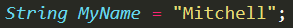
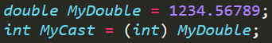
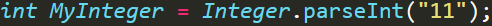

General:
When writing programs we often need to store little pieces of information throughout our code, this is what variables exist for. A variable is a piece of arbitrary data and we can assign our own values to it as and when we please.
Creating Variables and Data Types
When creating a variable in Java you also need to give a Data Type, any variable that is defined will always be that data type and can not take any other type of data. So, for example, if we made a variable and gave it an int (Integer) type that means that we can't then assign a String value to it.
Here are some of the primary Data Types
- int - Integer
- double - Decimal
- boolean - True/False
- String - Text
- char - Character
Defining and Initialization of Variables
In order to define a variable in Java and initialize it you first type the desired data type followed by the variable name, then an = sign in order to assign it an initial value and declare it as initialized. For example, if we wanted to create an Integer variable called MyAge and assign it a starting value of 19, the syntax would be:

This variable, MyAge, is now defined within its block's scope. This means that we can call for it's value or reassign it anywhere in that block.
If we instead wanted to create a String variable, called name, and with an initial value of my name we'd write the following code:
We follow the same pattern for creating all variables of all Types and the main Data Types that we're going to be using are listed above.
Casting and Parsing
In strongly typed languages such as Java it's not uncommon that we have a variable that's of one data type and we want to convert it into another data type. The process of doing this is called Casting, so if we had a variable that had a type double and we wanted to convert it to an integer we would have to cast the variable to an integer
So, using this example, if we had a double value and we wanted to cast it to an integer variable, the code would be like this:
Line 1 creates a double variable and initalizes it with the value 1234.56789
Line 2 then creates an integer variable and intializes it with the value of 1234.56789 casted to integer. The casting of an integer value simply removes all data after the decimal point, making it an integer. So, the integer variable would contain the value 1234
This style of casting can be used for any variables that allow casting, the reason we were allowed to cast from double to int is because they're both inherently numeric types. We can't however use casting to convert a String into a double or a String into an integer. This is where parsing is required.
If we want to convert an integer for example that is encased in a String (Like potentially from an input) then we need to Parse it. The syntax to parse an integer from a string in Java is:
The above code is classed as "dangerous" and therefore many IDE's will place an error asking you to surround it in a Try/Catch box, which is a type of error handling. This program will run fine, but will crash and throw an error if we enter anything other than a valid number.